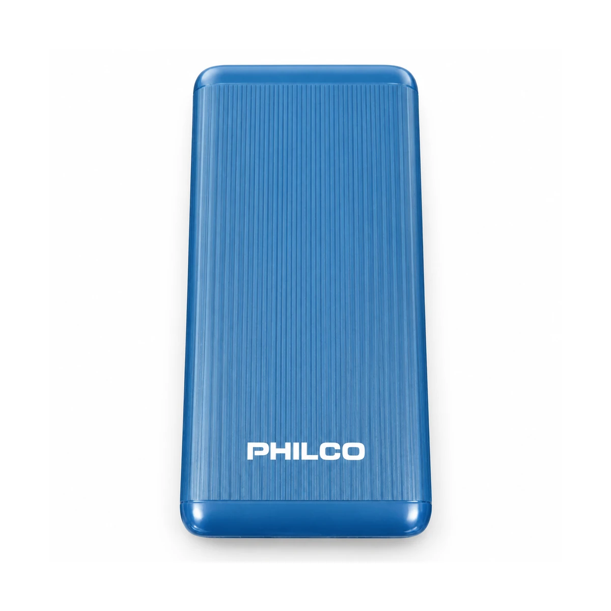
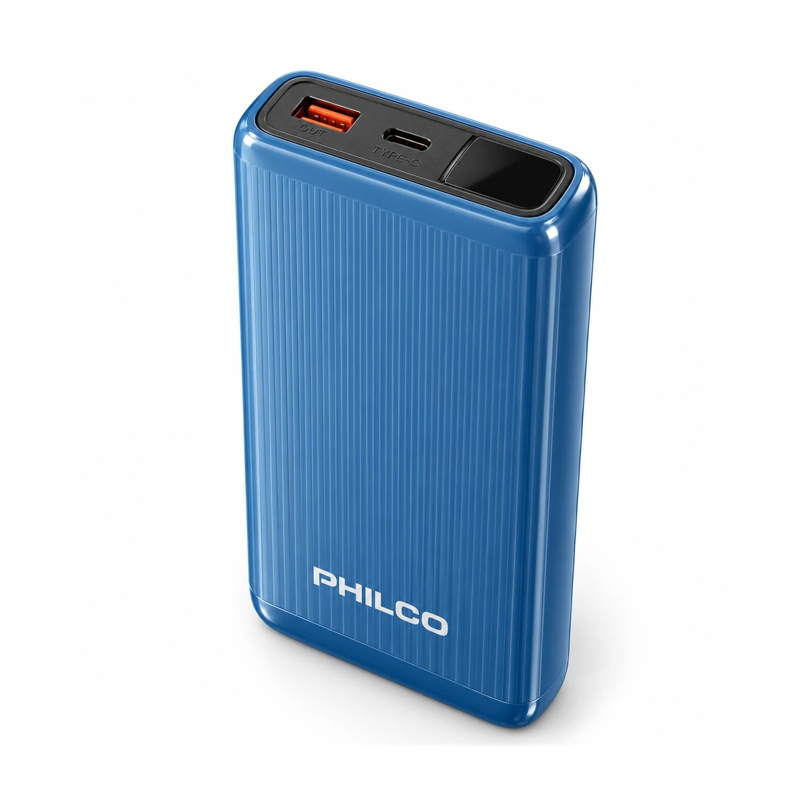
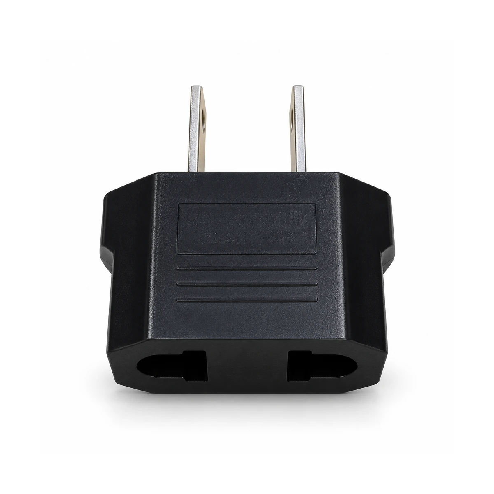

Dos mejoras solicitadas por el propietario. Precios, existencias y URLs conservados.
Batería portátil Philco FLP8202CV 20.000 mAh
POWE003 · Fotografía propia autorizada · Edición comercial asistida por IA
Antes
Ahora
Vista de tres cuartos cotejada con las fotos reales frontal y superior: una salida USB-A naranja, un USB-C y ventana negra de pantalla en ese orden. Se conservan PHILCO, azul, cuerpo estriado y tapas redondeadas; limpieza y luz de estudio. No se añaden accesorios, puertos o dígitos. Edición asistida por IA, no recuperación óptica.
Abrir ficha comercial →Adaptador de enchufe Europa a Latino negro
ADAP005 · Fotografía propia autorizada · Edición comercial asistida por IA
Antes
Ahora
Dos fotos propias y portada anterior cotejadas: carcasa negra biselada, tres líneas de agarre, dos clavijas planas y entradas europeas compatibles visibles. Acabado negro uniforme limpio, metal iluminado y perspectiva comercial. Panel moldeado discreto sin atribuir certificaciones ni valores ilegibles. Hardware conservado; edición asistida por IA.
Abrir ficha comercial →